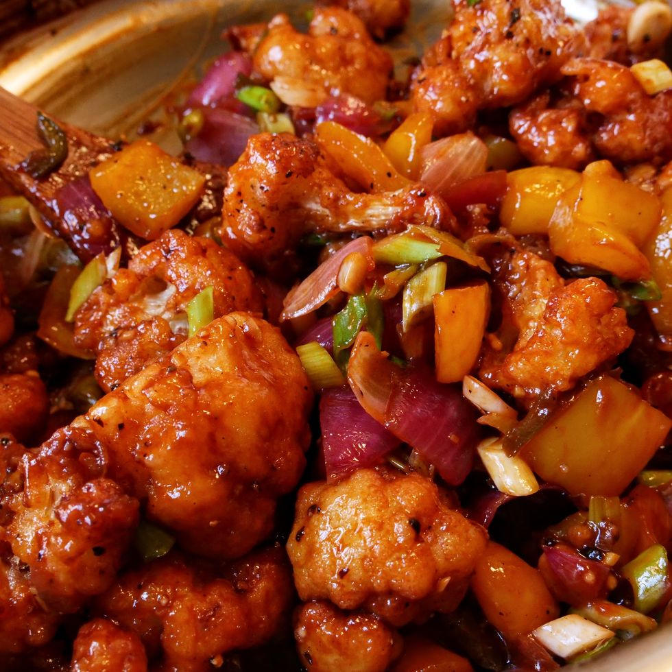

GOBHI MANCHURIAN

Description
Gobi Manchurian belongs to a group of dishes that are a hybrid of Chinese and Indian cuisine,
originating in Chinese restaurants that popped up in India that then tailored Chinese cuisine to a more Indian clientele.
Often characterized by a deep-fried protein like chicken, fish, or mutton being tossed and lightly cooked in a saucy broth,
so-called Manchurian dishes are fantastically flavorful and delicious when paired with cooked rice.
| Yield |
Prep Time |
Total time |
| 4 servings |
25 mins. |
1 hr 15 mins. |
Ingredients
| Cauliflower |
Sauce and Assembly |
- 6 c. cauliflower florets (from about 1 small cauliflower)
- 3 cloves garlic, grated
- 1 tbsp. finely grated peeled ginger
- 1/2 tsp. cayenne pepper
|
- 1 tbsp. neutral oil, plus more for frying
- 1 small red onion, chopped
- 1 bell pepper, seeds and stem removed, chopped
- 2 green chiles, finely chopped
- 2 scallions, cut into 1" pieces, plus more for serving
- 6 cloves garlic, chopped
- 1 tsp. finely chopped peeled ginger
- 1/2 tsp. freshly ground black pepper
- 1/4 c. ketchup
- 2 tbsp. soy sauce or tamari
- 1 tbsp. rice wine vinegar
- 1 tbsp. sriracha
- 2 tsp. granulated sugar
- 1/4 tsp. ground white pepper
- 1/4 tsp. MSG
- 1 1/4 c. cornstarch
- 2/3 c. water
- 1 tsp. kosher salt
|
Directions
Cauliflower
- In a large pot filled with 1" water, place cauliflower in a steamer basket and steam, covered, until knife-tender, 8 to 10 minutes.
Transfer cauliflower to a plate, let cool, and pat dry.
- Toss cauliflower with garlic, ginger, and cayenne to combine;
set aside until ready to use.
Sauce and Assmebly
- In a large skillet over medium heat, heat 1 tablespoon oil.
Add onion, bell pepper, chiles, scallions, garlic, ginger, and black pepper.
Cook, stirring frequently, until onions begin to soften, about 5 minutes.
Add ketchup, soy sauce, vinegar, sriracha, granulated sugar, and white pepper and stir to combine.
Remove from heat and stir in MSG.
- Into another large pot fitted with a deep-fry thermometer, pour oil to a depth of 2".
Heat over medium heat until thermometer registers 350°.
In a large bowl, stir cornstarch, water, and salt until a thick slurry forms.
Working in batches and using clean hands, thoroughly coat cauliflower in slurry, then shake off excess before carefully lowering into oil, one piece at a time.
Fry, stirring occasionally, until deeply golden, about 8 minutes.
Transfer to skillet with sauce and repeat with remaining cauliflower.
- Toss cauliflower to fully coat in sauce.
Sprinkle with more scallions before serving.